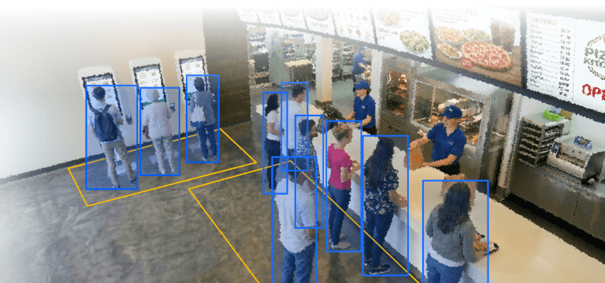
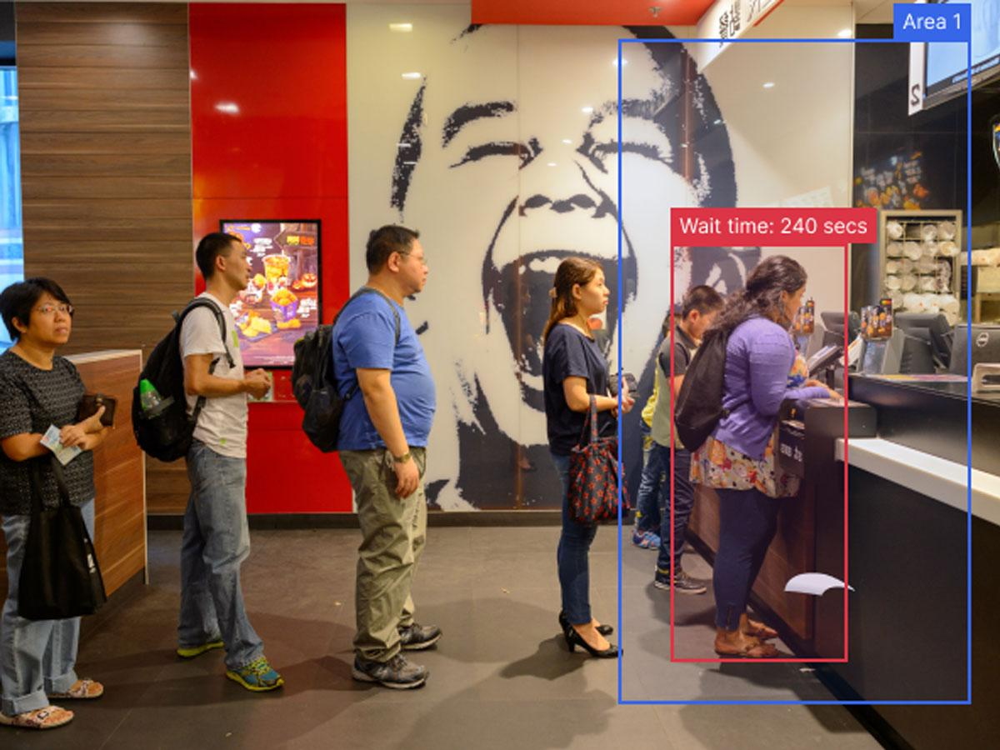
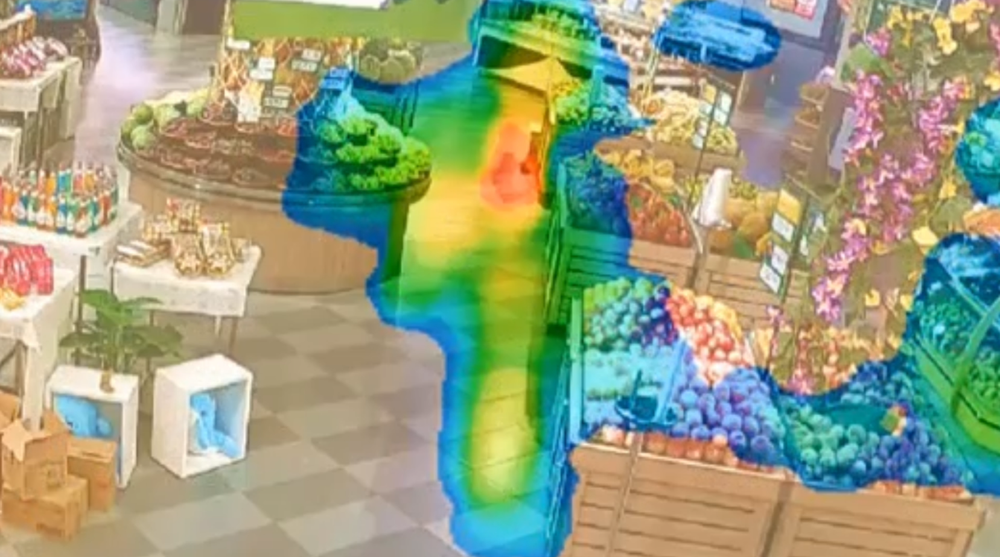
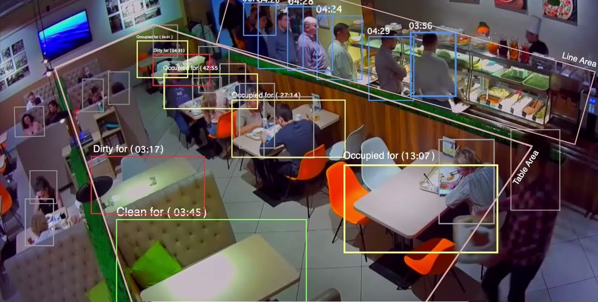
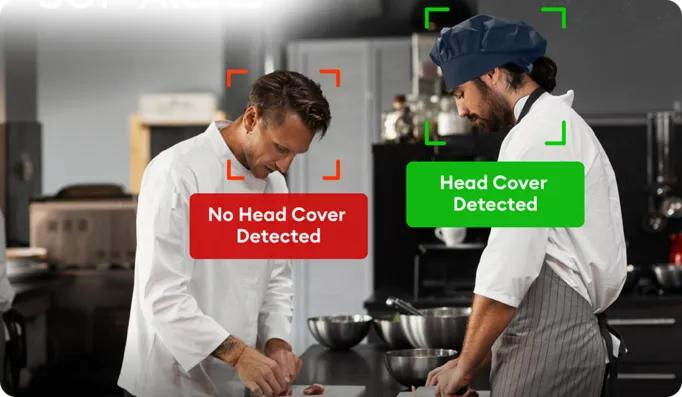
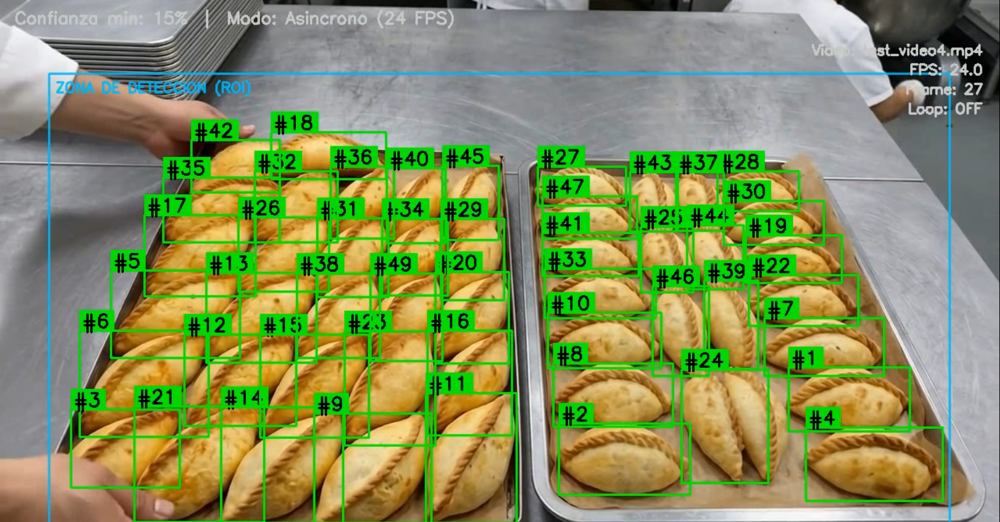
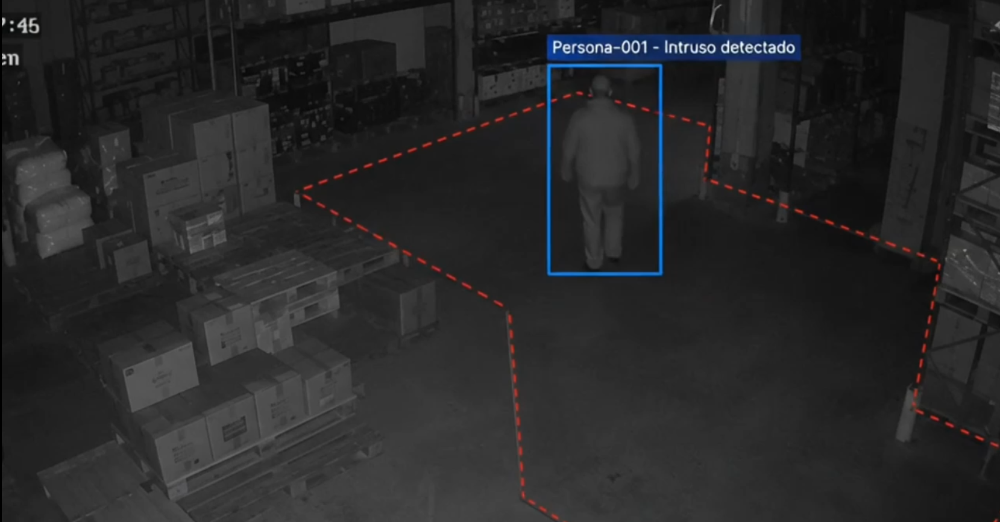

VigIA estructura sus funciones analíticas en cuatro módulos independientes: Personas, Operaciones, Producción y Seguridad. Cada cliente puede contratar los módulos que se ajusten a sus prioridades de gestión. A continuación se detalla el alcance de los módulos orientados a la experiencia del comensal y la supervisión del salón y personal.
Analiza el flujo, tránsito y permanencia de comensales en el restaurante para apoyar la toma de decisiones sobre turnos y servicio:



Supervisa los estándares de servicio en mesas y las normas higiénicas del personal en cocina y sala de atención:


La eficiencia interna de la cocina y el resguardo de los locales en horarios no laborales completan la supervisión integral de la cadena mediante análisis visual continuo:
Diseñado para monitorear el flujo de preparación y salida de alimentos en la ventanilla de despacho (pase de cocina):

Protege las instalaciones fuera del horario comercial aprovechando las cámaras instaladas en accesos, bodegas y salón:

Para el dimensionamiento de hardware, es indispensable distinguir tres conceptos no equivalentes: Sucursales (10 locales), Cámaras instaladas (120 disponibles) y Dispositivos de procesamiento. Un mismo equipo local con capacidad suficiente puede procesar cámaras de varias sucursales si la conectividad y el ancho de banda lo permiten.
Medición sobre equipo del cliente con procesador Intel Core i7-10700 (8 núcleos, 16 hilos) y 16 GB de RAM en Windows 11 para análisis de personas en cajas:
| Prueba de Carga | Velocidad de Muestreo | Carga de CPU Estimada | Evaluación Operativa |
|---|---|---|---|
| 4 cámaras simultáneas | 3 imágenes por segundo (fps) | 8 % – 11 % | Muy cómodo (consumo marginal) |
| 10 cámaras simultáneas | 3 imágenes por segundo (fps) | 19 % – 27 % | Cómodo para operación continua |
| 10 cámaras simultáneas | 5 imágenes por segundo (fps) | 30 % – 43 % | Cómodo, con amplio margen libre |
| 10 cámaras simultáneas | 10 imágenes por segundo (fps) | 58 % – 83 % | Al límite (no recomendado para 24/7) |
El Plan Local contempla la instalación de licencias en servidores o computadores situados en las instalaciones del cliente. Los cuatro módulos disponibles son: Personas, Operaciones, Producción y Seguridad. Se recomienda contratar el paquete de 3 módulos para cubrir las necesidades clave del negocio gastronómico.
El precio de instalación inicial en el primer dispositivo varía en función de la cantidad de módulos contratados. Incluye la puesta en marcha, calibración y 6 meses de soporte técnico gratuito:
| Cantidad de Módulos Contratados | Precio de Instalación Inicial |
|---|---|
| 1 módulo estándar | Bs 9.000 |
| 2 módulos estándar | Bs 10.400 |
| 3 módulos estándar Recomendado | Bs 11.900 |
| 4 módulos estándar | Bs 13.100 |
Para expandir el sistema a nuevas sucursales o dispositivos adicionales, se aplica una tarifa fija preferencial de directo solo Bs 1.100 por cada instalación en dispositivo extra.
Para una cadena que contrata la instalación inicial con los 3 módulos recomendados más 5 sucursales adicionales:
La condición se aplica a la cantidad de instalaciones contratadas y no condiciona la arquitectura técnica si se centraliza el procesamiento en menos servidores.
Finalizado el período de 6 meses de garantía gratuita, el servicio de soporte estándar tiene un costo de Bs 250 al mes para ajustes menores, monitoreo preventivo y correcciones. Nuevos modelos o desarrollos a medida se cotizan por separado.
Bajo la modalidad Plan Nube, el análisis de video se ejecuta directamente en los servidores cloud de VigIA. La cadena no requiere adquirir computadores dedicados ni realizar mantenimiento de servidores locales, pagando únicamente por cámara activa al mes.
El precio base por cámara incluye hasta 3 módulos activos simultáneamente. A mayor cantidad de cámaras y según el horario de detección requerido, se aplican descuentos acumulables:
| Concepto | Condición de Aplicación | Tarifa Resultante |
|---|---|---|
| Tarifa base por cámara | Hasta 3 módulos estándar activos por cámara | Bs 170 / mes |
| Descuento por volumen (5 a 15 cámaras) | 10 % de descuento sobre tarifa base | Bs 153,00 / mes |
| Descuento por volumen (16 a 31 cámaras) | 15 % de descuento acumulado (+5 % adicional) | Bs 144,50 / mes |
| Descuento por volumen (32 o más cámaras) | 20 % de descuento acumulado (+5 % adicional) | Bs 136,00 / mes |
| Descuento por horario (12 a 16 horas/día) | 5 % de descuento adicional sobre la tarifa | Aplica descuento |
| Descuento por horario (8 horas/día) | 10 % de descuento adicional sobre la tarifa | Aplica descuento |
| Detecciones especiales fuera de catálogo | Modelos personalizados que no forman parte de lo descrito | Bs 210 / mes |
Dado que solo se requiere procesar las cámaras estratégicas de la operación, al conectar 5 cámaras clave en un establecimiento con el 10 % de descuento por volumen:
Para avanzar en la implementación sin costos innecesarios, se coordinará una sesión de trabajo conjunto entre el equipo de VigIA y los responsables de operaciones y tecnología del restaurante para: